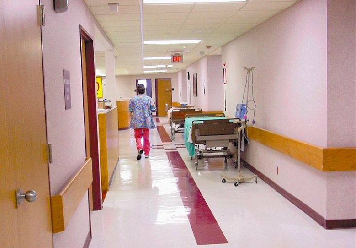

Practice Makes Imperfect
Experience may not be enough
Eui San Cha
Spring 2005

Medicine is a curious business. Physicians inject unnatural chemicals
into the bloodstream and open up patients’ bodies to manipulate their
anatomy and physiology. Although the risks are often high, we are still
confident in the science of medicine and the wisdom that our doctors
gain from experience. We believe that the years teach our doctors
grace, dexterity, and the wisdom to see our fragile bodies through
their unexpected twists and turns.
However, this is only true to an extent. As with all
things learned, medicine has a learning curve. It is like a line of
knowledge smoothly curving upward from the day a student graduates from
medical school to his first months as a resident, and onward through
the years as he encounters more cases and treats them with routine
mechanical perfection.
In reality, the line is not so smooth. The world of
medicine is a rapidly evolving science, in which doctors are expected
to stay up to date with new medical advancements all on their own. As a
result of this, doctors rely less on their own experience and more on
research published in journals—a shift in medical culture that has
startled older physicians. It is easy to understand the difficulties in
keeping up with this rapid change.
Such concerns are not mere speculation, as seen in a
recent study from researchers at Harvard Medical School, published in
February 2005. Findings claim that aged physicians are less likely to
know or use current standards of treatment. This study, a comprehensive
review of papers published since 1966, is the first to compile
quantitative evidence from a range of medical specialties from
internists to cardiologists to family practitioners. The data indicate
that, as a result of aged physicians tending to neglect current
standards of treatment, patients experience lower quality of care and
greater risk in 70 percent of cases. Another one of their studies found
that a patient is actually more likely to survive a heart attack if
treated by a more recent graduate of medical school; mortality rates
rose on the average of one percent for every two years since a doctor’s
graduation from medical school.
“I’m not hanging up my stethoscope just yet,” says
Duc Vo, M.D., a pediatrician in San Diego, California. With more than
two decades of experience in private practice, he firmly believes that
his patients are safer under his care now, compared to when he first
started. “In terms of bare facts, I had more memorized while taking my
board exams. Yet with my experience, I can now identify problems even
before thinking about them, because I’ve seen them all before. This
gives me more time to consider all the peculiarities of the
individual’s symptoms and give the best care possible.”
Such testimonials from doctors themselves cannot be
dismissed. As a result, the findings of the Harvard study may come as a
shock to most people. It seems that the hierarchy of the qualities upon
which we judge doctors should be reversed: the better doctor is not
necessarily the one who is seasoned with decades of experience, but the
one who is newly trained with the latest equipment and techniques.
The majority of studies find that performance
decreases with age. These findings point to the physicians’ reluctance
or inability to keep up with the new guidelines and abandon outdated
methods. For example, older physicians are less likely to prescribe
aspirin for angina patients or utilize new cancer- screening techniques.
The findings reflect a shift in the medical
profession from decisions based heavily upon personal experience to
decisions that reflect results of large clinical trials. The shift is
largely the result of the growing recognition of gaps between clinical
practice and research evidence, which often lead to ineffective and
harmful decisions. Although the idea of referencing literature is not
new, evidence based medicine encourages doctors to seek out research on
a more routine basis.